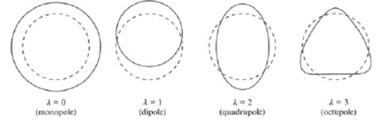
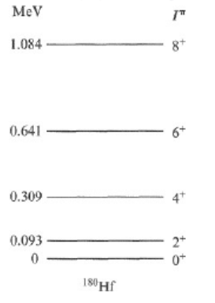

Physics and Astronomy, University of Kent
This appendix contains additional notes on the collective model - this is purely for interest and will not be assessed or examined.
The collective model goes beyond the shell model to include effects which encompass all the nucleons, hence - ‘collective’. The modifications due to this model are most apparent for those nuclei that have large number of nucleons in unfilled shells - ‘valence nucleons’.
Evidence for the collective model comes from the behaviour of excited states. (Recall that so far we have always assumed that our nuclei are in the ground state). Essentially, there are three ways in which a nucleus can become excited:
A proton or neutron is placed in a higher energy level.
The nucleus gains vibrational energy.
The nucleus gain rotational energy. This mainly occurs for nuclei with \(150 < A < 190\) and \(A > 230\).
Suppose we have an even-even nucleus and we would like to prepare it in an excited state. All the nucleons are paired, and so to place one of the nucleons in a higher energy level we need to break a pair.
As an example, take \(^{130}Sn\), an even-even nucleus which we would expect to have a ground state which is \(0+\) (i.e. 0 spin, even parity). Some more details on this nucleus are in Krane p134.
This nucleus has 50 protons and 80 neutrons. Going by the shell model, in the ground state we would expect 50 protons to completely fill up to the \(g_{9/2}\) shell and the 80 neutrons would be two short of filling the \(h_{11/2}\) shell.
To put this in a low-energy excited state we would expect to move a neutron into a higher level (the protons have a full shell and so a lot of energy would be needed to promote a proton). It turns out that promoting \(h_{11/2}\) neutrons would also require a lot of energy because there would be large energy gap to cross to reach the next level. What could happen is that one of the neutrons from the very bottom of the shell, in \(1s_{1/2}\), is instead promoted to the \(h_{11/2}\) level.
The total spin and parity of the nucleus then results from the coupling between these two unpaired neutrons in the \(s_{1/2}\) and \(h_{11/2}\) shells. If we recall the rules for combining angular momentum, this means that \(j\) could run in integer steps from \(|j_1 - j_2|\) to \(|j_1 + j_2|\) which in this case gives \(j = 5\) or \(j=6\). And we would expect an odd parity, from combining an odd (‘\(s\)’) parity with an even (‘\(h\)’) parity. And indeed, we do find excited states with these properties (\(5-\), \(6+\)).
Of course, there are other possibilities as well such as promoting a \(1d_{3/2}\) level neutron, for which we could also work out the expected spin and parity, and again we see these excited states experimentally at energies of around \(2\) MeV. These are shown in Figure 1.
However, we also see a \(2+\) excited state at around 1 MeV. As an exercise you can try to see which neutron(s) to promote to achieve this. There are a few possibilities, but they all involve breaking a pair of neutrons. So how can this excited state be created with an input of just 1 MeV, when all the other pair-breaking possibilities seem to require 2 MeV?
This 1 MeV level turns out to exist for a very large number of even-even nuclei. So it is not some quirk of this particular configuration, but rather a general property of many nuclei. This leads to the idea of collective features of the nucleus (vibrations and rotations), as opposed to the ‘extreme single particle’ model we have worked with so far.
Nuclear vibrations are often thought of as being similar to a liquid drop vibrating at high frequencies. The idea is that, while the nucleus remains a spherical shape when averaged over time, instantaneously it is deformed.
If we label the (angular) frequency of vibration by \(\omega\), then the energy associated with that vibration is \(E=hf = \hbar \omega\). This is the quantum world, and so it isn’t possible to have any arbitrary frequency of vibration, instead this is quantised in a way analogous to the quantum harmonic oscillator: \[\begin{equation} E = (n + 1/2) \hbar \omega. \end{equation}\] This quantisation can be thought of as a standing wave on the surface of the nucleus.
These discrete units of vibrational energy are called ‘phonons’, in a similar manner to how the basic units of electromganetic energy are called photons.
We parameterise the different vibrational modes with the symbol \(\lambda\). If we consider a point on the surface of the nucleus, its radial position varies in time according to: \[\begin{equation} R(t) = R_av + \sum_{\lambda} \sum_{\mu} \alpha_{\lambda \mu}(t)Y_{\lambda,\mu}(\theta, \phi). \end{equation}\]
Here, \(Y_{\lambda \mu}\) are the spherical harmonics, with \(-\lambda \leq \mu \leq \lambda\), and \(\alpha\) specifies the amplitude of each \(\lambda, \mu\) spherical harmonic component as a function of time. Note that \(\lambda\) and \(\mu\) are analogous to the parameters we label \(l\) and \(m_l\) when solving the Schrödinger equation, and so we have the normal rule \(\mu = -\lambda ... ,-2,-1, 0, 1, 2, ... \lambda\).
\(\lambda = 0\) is clearly not a very interesting term since there is no angular variation. Examples for the first three \(\lambda\)s are shown in Figure 2. It can be seen that the \(\lambda = 1\) mode results in a shift in the centre of mass of the nucleus. You will recall from classical mechanics that an object cannot shift its centre of mass from internal re-arrangement, and so this mode cannot occur.

So, the first excited state is \(\lambda = 2\). This is equivalent to an \(l=2\) state, giving 2 units of angular momentum and even parity (\(2+\)). Adding this to the ground state angular momentum of an even-even nucleus (which has \(O+\)) gives a total of \(2+\). (In case it’s not obvious, adding wavefunctions with even parity results in another wavefunction with even parity). We can think of this as adding two phonons of energy. This explains our mysterious \(0+\) state - this is what we find experimentally for the first excited state of even-even nuclei. So far, so good.
What about the next excited state? Suppose we add another two phonons. Now, for each \(\lambda = 2\) phonon there are 5 possible values of \(\mu\) (-2,-1,0,1,2). We have two phonons so there are 25 possible combinations of values giving a total \(\mu_T = \mu_1 + \mu_2\) as shown in Table 1.
| -2 | -1 | 0 | +1 | +2 | |
|---|---|---|---|---|---|
| -2 | -4 | -3 | -2 | -1 | 0 |
| -1 | -3 | -2 | -1 | 0 | +1 |
| 0 | -2 | -1 | 0 | +1 | +2 |
| +1 | -1 | 0 | +1 | +2 | +3 |
| +2 | 0 | +1 | +2 | +3 | +4 |
However, not all of these combination are possible in practice as we have another rule to observe. Phonons have integer spins and so symmetric total wavefunctions (recall that this is fundamental difference between particles that do and do not obey Pauli’s exclusion principle). So this means that the total wavefunction must also be symmetric.
A symmetric wavefunction can be obtained either by combining two symmetric wavefunctions, or two antisymmetric wavefunctions, but not from a symmetric plus an antisymmetric. As a result only those states with even \(\lambda\) are allowed:
\(\lambda = 4\): \(\mu =-4,-3,-2,-1, 0,1,2,3,4\)
\(\lambda = 2\): \(\mu = -2,-1,0,1,2,\)
\(\lambda = 0\): \(\mu = 0\)
So we would expect to find a triplet of excited states (0+, 2+, 4+). Figure 3 shows the low-lying levels of \(^{120}\mathrm{Te}\) reproduced from Krane. And indeed we do observe these groups at low energies, strong evidence in favour of the existence of vibrational states. There is some complications, for example they are not all exactly the same energy despite involving 2 phonons, but it suggest the vibrational model is reasonable first approximation.
We can do similar calculations for \(\lambda = 3\) and we do indeed find the predicted energy levels (see Figure 3). However, as we go to higher energies the pattern is less clear as we start to observe pair breaking.

Rotational states only occur for deformed nuclei (i.e. that have non-spherical equilibrium states). Deformation arises due to the way valence nucleons arrange themselves in the unfilled shells. The most deformed nuclei happen to be found for \(150 < A < 190\). The most common deformed shape is an ellipsoid, rugby ball shape.
Recall from classical mechanics that the rotational angular momentum of a body with moment of inertia \(I\) rotating at an angular frequency of \(\omega\) is given by \[\begin{equation} L = I \omega, \end{equation}\] and rotational energy by \[\begin{equation} E = 1/2 I \omega^2 = \frac{(I \omega)^2}{2I} = \frac{L^2}{2I}. \end{equation}\] Using \(L^2 = l(l+1)\hbar^2\), \[\begin{equation} E = \frac{l(l+1)}{2I} \hbar^2. \end{equation}\]
For even-even nuclei, which have a \(0+\) ground state, only rotational states with even values of \(l\) are allowed (due to the need for mirror symmetry). We therefore expect excited states at energies corresponding to \(l=2\), \(l=4\) etc. And indeed, if we look at the observed excited states for \(^{180}\mathrm{Hf}\) in Figure 4 we find the energies follow the \(l(l+1)\) dependence very well.

This works for many nuclei very well. Above \(l = 8\) the dependency deviates slightly; this can be interpreted as a the moment of inertia, \(I\), not being totally independent of \(l\), suggesting that the nucleus is to some degree ‘soft’, its internal structure can be affected by the forces involved in rotation.